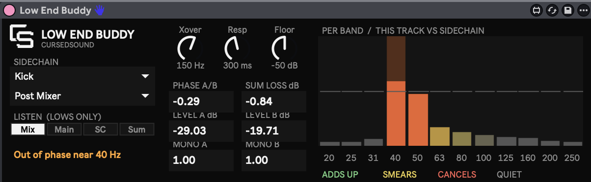

Low End Buddy
Max for Live audio effect.
Compares the low end of two tracks, for example bass and kick,
and shows where they clash or cancel between 20 and 250 Hz.
ChecksPhase, frequency clash, mono
Range20 — 250 Hz, 12 bands
RequiresAbleton Live 12 with Max for Live
Version0.9
PriceFree

Reading the bands
- Height shared energy in that band, crowded above the line
- Green adds up
- Yellow smears
- Red cancels
- Grey one side is quiet
Setup
- Put the device on one track, for example the bass.
- Pick the second track in the Sidechain menus, for example the kick.
- Read the status line and the band view. Listen: Sum plays both lows together to hear any cancellation.